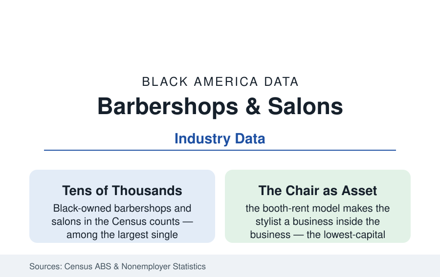

Black Business
Barbershops and Salons: The Most Numerous Black Businesses in America
Hair care is where Black business ownership is densest — tens of thousands of shops, the booth-rent economy, and the chair as a first rung of ownership. The ABS data.

Count Black businesses by category and one industry towers over the rest by sheer number: hair. The barbershop and the salon together form the densest ownership landscape in Black America — tens of thousands of establishments in the Census counts, a chair-rental economy inside them that multiplies the ownership again, and an institutional role (the shop as the neighborhood's newsroom, clinic-outreach site, and political clubhouse) that the data on blood-pressure screenings and voter drives keep confirming. This article reads the industry's numbers.
The Ownership Structure: Shops Inside Shops
The ABS and Nonemployer data decompose a tiered economy: the shop owner (the lease, the license, the chairs — the establishment itself), the booth renters (licensed barbers and stylists renting chairs by the week — independent businesses within the business, their own books, their own clientele, filed in the statistics as nonemployer firms in their own right, which is why the category's firm count runs so high), and the employees of the commission shops (the chains' and larger salons' model). The economics of the tiers are the industry's ladder in cross-section: the chair's weekly rent against the barber's book of regulars (the clientele as the portable asset — the barber who moves takes the book, the industry's labor mobility written into its customs), the shop's take as the landlord's annuity, the product shelf's quiet margin (the shop as the beauty-supply retailer's last mile — carrying the Black brands of the beauty file into the neighborhood), and the cash-and-app payment stack's modernization (the booking platforms' data — the industry's appointment book now substantially digital, its deposit and cancellation policies the platforms' design). The licensing layer prices the entry: the barber and cosmetology licenses' hour requirements (1,000 to 1,800 hours by state in the licensing data — the tuition and the year of unpaid training the fee file would recognize, the reciprocity and natural-hair-braiding exemption fights of the licensing-reform record, state by state, in the current decade's legislation).
The Institution: What the Shop Does Besides Hair
The public data keep finding the shop at work on other ledgers: the health file's barbershop trials (the landmark pharmacist-and-barber hypertension study — blood-pressure control achieved at rates the clinic system had not matched, published in the New England Journal — and its successors in diabetes, colorectal screening, and vaccination outreach, the shop as the health system's most trusted Black storefront, a measurable clinical asset), the political file's registration and turnout operations headquartered at the chair, the financial file's informal economy (the shop as the neighborhood's check-cashing-era survivor and its small-loan referral node), and the information economy (the shop's talk as a documented media channel — the Black press's distribution history runs through it, the modern equivalent in the podcast-and-clip culture recorded in the shop itself). The salon's parallel record runs through the women's economy: the beauty shop as the historic Black businesswoman's first enterprise (the Walker and Malone empires of the beauty file began as its supply side), the salon's role in the professional woman's week, and the natural-hair era's market reconstruction (the relaxer market's decline and the natural-care segment's rise in the sales data — the salon's service menu rewritten by its clients' choices across a decade).
The Modern Economics: Platforms, Products, and Pressure
The current data describe an industry being re-intermediated: the booking platforms taking their percentage and delivering the no-show's death (the deposit era's effect on the book's reliability in the stylists' own reporting), the social portfolio (the stylist's following as the clientele-acquisition channel — the platform data's hair category among its largest service verticals), the braiding-and-locs specialty economy's growth (the protective-styles market in the consumer data, its practitioners' licensing fights largely won in the reform states), and the pressures in the same frame (the rent line in the gentrifying neighborhood — the shop as the displacement file's classic tenant, its decade-long lease the exception; the beauty-supply ownership question on the shelf behind the chair — the product retail tier's ownership running substantially outside the community in the trade data, the shelf-share fight of the beauty file at the neighborhood scale; and the labor pipeline: the barber and cosmetology schools' enrollments, the apprenticeship models, the master-barber tier's economics). The chains' absence is itself a datum: no national Black-owned shop franchise has reached the scale of the category's independents — the industry's ownership staying resolutely local, its consolidation an open question the franchise file watches.
Reading the Shop Data
The most numerous Black businesses in America are measured in chairs: the lowest rung of ownership and, by the clinical literature's own verdict, one of the most effective health institutions in the community — both facts printed in the same census of establishments. The shop has been the neighborhood's bank of trust for a century of Fridays. The data of every field in this atlas, followed far enough, eventually walk through its door.
More in Black Business
Black-Owned Businesses: Counts, Receipts, and the Representation Gap
About 161,000 Black-owned employer firms and three million solo ventures: how the Census Bureau counts Black business ownership, where firms concentrate, and the gap between population share and business share.
Black Median Net Worth: The Wealth Gap in Federal Reserve Data
The Federal Reserve puts Black median family net worth at $44,900, against $285,000 for White families — about 16 cents on the dollar. The widest gap in economic data.
Black Buying Power: The $1.8 Trillion Consumer Economy
Black buying power is estimated at about $1.8 trillion — larger than the economy of most nations. What the figure measures, who produces it, and what it buys.
Source: U.S. Census Bureau Annual Business Survey and Nonemployer Statistics; Bureau of Labor Statistics; state licensing board data; industry association records.